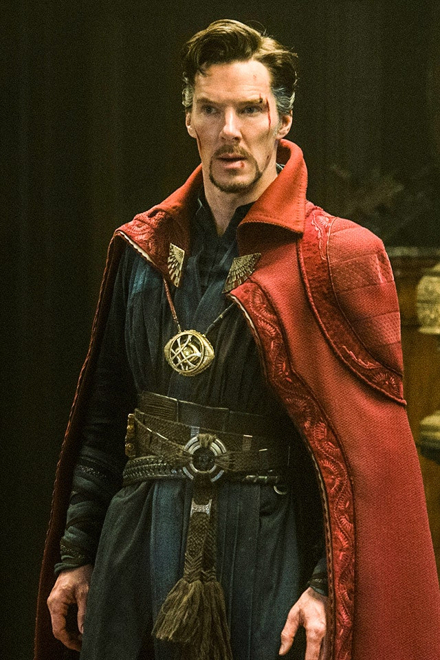

Doctor Strange
Doktor Strange a Marvel Comics univerzum egyik szereplője. A szereplőt Stan Lee író és Steve Ditko társíró és rajzoló alkotta meg. Első megjelenése a Strange Tales 110. számában volt 1963 júliusában. Dr. Stephen Strange a Föld Legfőbb Varázslója és védelmezője a világot fenyegető természetfeletti erőktől és lényektől. Magyarul fordították már Csoda doktornak, Doktor Különcnek.
TörténeteStephen Strange 1930-ban született, édesapja, Eugene, és édesanyja, Beverly Strange nyaralásának kellős közepén, Philadelphiában. Stephen kishúga, Donna, már a család farmján látta meg a napvilágot 1932-ben, Nebraskában. Stephen élete innentől kezdve korántsem volt boldog és gondtalan, egymást követték a szörnyűbbnél szörnyűbb események és tragédiák. Stephen mindössze nyolcéves volt, amikor jövendőbeli nagy riválisa, Karl Mordo áthatolva az idő szövedékén a múltban próbálta meggyilkolni őt, még mielőtt felnőttként csaphatott volna össze vele. Mordo a kisfiúra szabadított egy seregnyi démont és holt lelket, ám Mordo mestere, az Ősvarázsló (Ancient One) útját állta a pusztítóknak, és mágikus védelemmel vonta körül Stephent. Bár Stephent megóvta ez a mágikus burok, családját és szeretteit korántsem. A támadás után egy vagy talán két évvel Stephen öccsének, Victornak a megszületésével vette kezdetét a Strange család pokoljárása. Stephen alig töltötte be a tizenegyet, amikor húga, Donna, súlyos és halálos betegség tüneteit kezdte mutatni. Sem a kezelések, sem az orvosságok nem hoztak enyhülést a kislány kínjaira. Donnát lassan, nagyon lassan emésztette fel a kór. Stephen képtelen volt tétlenül figyelni, ahogy imádott testvére haldoklik, ezért erejét megfeszítve tanult, hogy orvos válhasson belőle. Tizenkilencedik születésnapján azonban holtan találta az úszómedence mellett Donnát. Nem tudni még ma sem, hogy végül a betegség végzett vele, vagy Mordo keze is benne volt a dologban valamiképpen. Mindenesetre Stephen - bár megrendülve a tudományba vetett hitében - folytatta orvosi képzését. Stephen személyisége alapjaiban változott meg Donna halála után. Nem lett erőszakosabb, sokkal inkább arrogáns és lenéző a többi emberrel szemben. Orvosi diplomája megszerzése után egy New York-i kórházban kezdett dolgozni sebészként, és nagyjából erre az időszakra tehető édesanyjának halála is. Stephen eztán még inkább elhidegült az emberektől, egója nem ismert határt, és bár minden kollégája tisztelte hatalmas szaktudásáért idegsebészként, ám ha csak tehették, messzire kerülték. Strange-et nem érdekelte betegei állapota, nem az embert látta bennük, csupán a megoldandó esetet, és a kezelés végén az érte járó pénzt. Harmincéves korára már ünnepelt sebész volt, ám teljes mértékben embergyűlölő. Bár ez így nem teljesen igaz. Egy embert mégis sikerült szívébe fogadnia, Madeleine Revellt, aki az ENSZ-nek dolgozott tolmácsként. Kapcsolatukat persze Stephen egója tette tönkre. Két évvel anyja halála után apja, Eugene, egy titokzatos betegséggel ágynak esett. Stephen képtelen volt szembenézni még egy családtagja elvesztésével, és megtagadta apja kívánságát, hogy meglátogassa halálos ágyánál. A dolog mélyen felháborította Stephen öccsét, Victort, aki bátyjára támadt. Victor és Stephen vitája újabb tragédiával tetőzött be. Victor faképnél hagyta bátyját, és elhagyva annak lakását a dühtől vakon egy autó elé lépett, amely halálra gázolta. Strange halott testvére testét nem temettette el, hanem bizarr módon hibernálta. Ennek a későbbiekben még nagy jelentősége lesz. 1963-at írtunk, amikor bekövetkezett a Strange életére legnagyobb hatással járó autóbaleset. A saját balesete. Stephen olyan súlyos kézsérüléseket szenvedett el, amelyek miatt le kellett mondani a további orvosi munkájáról. Mivel a kórház által felkínált tanácsadói posztot visszautasította, végképp nem maradt semmi az életében, ami kicsit is számított volna. Az évek során felgyülemlett tragédiák és veszteségek hatalmas súlya egyszerre szakadt rá, de már túl késő volt a megbánáshoz. Szüleit, testvéreit, szerelmét és állását elvesztette, és már az öngyilkosság gondolata is megfordult a fejében, amikor hírét vette egy misztikus embernek, az Ősvarázslónak, olyan természetfeletti erők birtokosának, amelyet a halandó elme felfogni sem képes. Strange mindent egy lapra feltéve útra kelt a messzi Tibetbe, hogy rátaláljon az Ősvarázslóra. Hosszas keresés után megtalálta a szent embert, aki azonban megtagadta tőle a gyógyító erőt, ehelyett inkább felajánlotta Stephennek, hogy legyen a tanítványa. Ezt viszont Stephen utasította vissza, és azonnal a hazatérés mellett döntött. Útra viszont a bekövetkező gyilkos hóvihar miatt nem kelhetett, ezért az éjszakát az Ősvarázsló szentélyében töltötte. Az éjszaka folyamán Stephen Strange élete pálfordulást vett. Szemtanúja volt annak, ahogy az Ősvarázsló tanítványa, Mordo, csontvázakat idéz meg, és az öreg varázsló megölésére buzdítja őket. Az Ősvarázsló könnyedén söpörte félre a csonthadat, és olyan mágikus párbajt vívott csalárd tanítványával, amely lenyűgözte Stephent. A harc egy pontján Stephennek döntést kellett hoznia, végignézi, ahogy Mordo megöli az Ősvarázslót, vagy az öreg védelmére kel. Stephen az utóbbit választotta, és amíg az öreg a mágiával, addig Strange a jól bevált fizikai ráhatással (értsd: jobb egyenes, bal horog) ellentámadásba lendült. Ketten végül sikeresen kiűzték Mordót a szentélyből, de biztosak lehettek abban, hogy nem most látták őt utoljára. Stephent lenyűgözte és átjárta a mágikus világ, az Ősvarázsló pedig ismét felajánlotta neki, hogy tanítványává fogadja. Stephen ezúttal kapva kapott a lehetőségen. Az Ősvarázsló ekkor vette le titokban a mágikus védőmezőt Stephenről, akinek immár saját tudása és ereje szerint kellett boldogulnia. Az Ősvarázsló azzal a nem titkolt szándékkal vette magához Strange-et, hogy egy napon majd ő legyen az utódja mint a Földet védelmező Legfőbb Varázsló. Strange éveket töltött elmélyült tanulással, eközben felfedezte és elsajátította a varázslás alapjait, megismerte a világot leginkább fenyegető mágikus lényeket: Dormammut, Staannish-t és Vishantit, továbbá többször is összecsapott közben a fel-felbukkanó Mordóval. A varázslás legvégső szintjének eléréséhez Strange magától a Haláltól kapott egy feladatot. Szembe kellett néznie minden félelmével, minden bánatával és haragjával, felül kellett emelkednie mindazon veszteségen, amely születése óta beárnyékolta életét, de ő megállta a helyét. A Haláltól elnyert jutalom nem volt csekély, Stephen a kortalan és szinte halhatatlan mágusok sorába lépett. Az Ősvarázsó a képzés végén több mint hatszáz éves volt, így Strange-re is hasonlóan hosszú kor várt. Strange hét évet töltött az Ősvarázsló mellett tanítványként, bár egyes feltételezések szerint a mágikus világban jóval több is eltelt. Strange visszatért az Egyesült Államokba, és mágikustanácsadó-szolgálatot indított New York Greenwich Village negyedében, egy Sanctum Sanctorum nevű épületben. Strange egy segítőt is kapott maga mellé Wong személyében, akinek családja évszázadok óta szolgálta hűségesen a Legfőbb Varázslót. Strange és Wong kapcsolata a kezdetektől sem volt igazi úr-szolga viszony, sokkal inkább barátok voltak. A materiális világhoz szokott New York-i lakosok eleinte közröhej tárgyának tekintették az egykori sebészt, aki magát a Föld Legfőbb Varázslójának nevezte, ám mikor a világot egyre többször fenyegették démonok, lidércek, holt lelkek és zombik, az emberek megtanulták tisztelni és elismerni a lényekkel szembeszálló rejtélyes doktort, akinek segítségét a helyi és nemzetközi hatóságok is egyre gyakrabban igénybe vették. Mikor a Fantasztikus Négyes színrelépésével beköszöntött a Hősök korának hajnala, Strange is tagja lett a New York-i szuperhős-társadalomnak. Pont ezt használta ki az asgardi isten, a cselszövések mestere, Loki, aki manipulálta Strange-et, és Thor ellen fordította. A trükk azonban visszafelé sült el, és Thor összefogva Doktor Strange-dzsel megtámadta és legyőzte Lokit. Strange eztán találkozott az ifjú kalandorral, Pókemberrel, akinek segítségével rengeteg embert szabadított ki egy misztikus dimenzióból, ahová Mordo börtönözte be őket. A doktort lenyűgözte Pókember hősiessége és önzetlensége, és csupán ez volt az oka, hogy Strange nem távolította el Pókember emlékeit a misztikus dimenzióban tett látogatásukról. Strange és Pókember barátok és szövetségesek lettek, és az évek során több alkalommal is harcoltak egymást segítve, egymás oldalán. Dormammu évezredek óta áhítozott az Ősvarázsló hatalmára, így elkerülhetetlen volt, hogy sor kerüljön az ő és Doktor Strange küzdelmére is. A viadalt a Sötét Dimenzióban vívták meg, ahol Strange megismerkedett Dormammu nővérének, Umarnak a leányával, a tehetséges varázslótanonccal, Clea-vel. A lány mélységesen gyűlölte a rettegett Dormammut, és segített Doktor Strange-nek felülkerekedni rajta. Clea árulása nem maradt válasz nélkül, Dormammu bosszút esküdött ellene és Strange ellen, és napjainkig ő a Föld Legfőbb Varázslójának legfélelmetesebb nemezise. Röviddel ezután Strange és több más szuperhős összefogtak, hogy közös erővel legyőzzék a hatalmas erejű Sundownt. Bár ezidáig is kitüntetett helye volt a doktornak a szuperhősök sorában, csak Sundown legyőzése után kezdték mind többször tanácsát és segítségét kérni az olyan hőscsapatok, mint a Fantasztikus Négyes, az X-Men vagy a Bosszú Angyalai. Hónapokkal később, Reed és Sue Storm esküvője után Strange rádöbbent, hogy beleszeretett Clea-be, akinek be is vallotta érzéseit, és miután a lány is szerette őt, hozzáköltözött New Yorkba. A későbbiek során Strange Asmodeus személyében lelt új halálos ellenségre, aki saját démoni dimenziójában kísérelte meg foglyul ejteni a Legfőbb Varázslót és megszerezni a hatalmát. Ez többé-kevésbé sikerült is neki. Strange ugyan kiszabadult, de valami megváltozott benne. Asztrális lényének egy darabját elvesztette a másik dimenzióban, és Asmodeus negatív hatása emiatt rendkívüli módon érződött. Strange arcvonásait egy különös maszk mögé rejtette, és miután győzelmet aratott Asmodues felett, visszavonult a teljes névtelenségbe. Minden róla szóló dokumentumot megsemmisített és mindenki elméjéből kitörölte a saját létezését. Stephen Strange megszűnt létezni, a fővarázsló pedig Stephen Sanders néven kezdett új életet. Strange sorsa persze nem az volt, hogy hátralévő életében egy könyvtárszobában merengjen saját életén. Hamarabb szüksége volt a világnak rá, mint azt bárki gondolhatta volna. A Földet megtámadta a démonok egy rettenetesen elvetemült faja (Undying Ones) és vezetőjükkel, a Névtelennel (Nameless One) az élen a bolygó meghódítását tűzték ki célul. Strange továbbra sem akarta felfedni magát, ezért manipulálta Namor herceget és a hihetetlen Hulkot, hogy legyenek segítségére a démonok legyőzésében. A démoni seregek legyőzését követően Strange is ráébredt, hogy nem fordíthat hátat teljesen a világnak. Ezért részben feloldotta a kilétét leplező varázst, és visszatért eredeti szakmájához, a gyógyításhoz szaktanácsadóként. Munkába lépését követően Mordo is rátalált és megkísérelte megölni őt. Strange csak az Ősvarázsló segítségével tudta legyőzni régi vetélytársát, és szintén az Ősvarázsló közbenjárására oldotta fel a kilétét leplező mágiát. Így Stephen Strange újra reflektorfénybe került, a világ pedig ismét emlékezett a Föld Legfőbb Varázslójára. Visszatérése után a Névtelen újabb támadást intézett a Föld ellen, és Strange immár manipuláció nélkül folyamodott Namor és Hulk segítségéhez. A hármashoz csatlakozott még az Ezüst Utazó is, és így jött létre az Oltalmazók (Defenders) kemény magja. A tagok sosem tekintettek összefogásukra csapatmunkaként, inkább néhány olyan kalandor társaságának tartották, akik erejüknek hála képesek változtatni a dolgok menetén. Az Oltalmazók nemcsak a Földön, hanem a világűrben és a varázsvilágban is nemegyszer megfordultak és válogatott gonosztevőkkel, idegen hódítókkal és démonokkal küzdöttek életre-halálra. Itt kell említést tenni egy másik csapatról, amelynek a létezése a legnagyobb titkok közé tartozik. A kree-skrull háborút követően néhányan a Föld legnagyobb hősei közül – Dr. Strange, Fekete Villám (Black Bolt), X Professzor, Vasember, Mr. Fantasztikus és Namor – megalapították az Illuminátust (Illuminati). Ez a titkos csoport bizonyos időközönként összegyűlt és megtárgyalta a világot érintő legsúlyosabb kérdéseket, legyen szó egy belső veszély elhárításáról vagy egy külső támadás letöréséről. Az összejöveteleket közös megegyezéssel Strange elnökölte. Az Illuminátus már jóval azelőtt tudomást szerzett bizonyos eseményekről, mielőtt azok ténylegesen bekövetkeztek volna. Apró jelekből és utalásokból már akkor tudták a közelgő skrull invázióról, mikor a földönkívüliek első ügynökeiket a Földre telepítették megfigyelőként. Strange persze a saját ellenségeivel is nem kevésszer megküzdött az Oltalmazókban és az Illuminátusban betöltött helye dacára. Kemény harcot vívott az egyik legősibb démonnal, Shuma-Gorath-szal és ördögi szolgáival. Shuma évezredekkel korábban már uralkodott a Földön, de a hibóriai korban letaszították trónjáról és száműzték a Földről. Shuma megszállta az Ősvarázsló testét, és Strange kénytelen volt saját mentorával felvenni a harcot. Az Ősvarázsló minden maradék erejét összeszedve visszanyerte egy pillanatra saját tudatát és könyörögve kérte tanítványát, hogy végezzen vele, és ezzel állja útját Shuma-Gorath-nak. Strange teljesítette az Ősvarázsló kérését és végzett mesterével. Bár az Ősvarázsló fizikai valója elpusztult, asztrális teste elfoglalta helyét a világot védelmező entitások között. Shuma nem léphetett át a földi világba, Strange pedig a Föld egyedüli varázslója maradt, és minden korábbinál hatalmasabb mágikus erő birtokosa lett, miután az Ősvarázsló mágiája is átvándorolt belé. Strange az így kapott többleterőt arra szerette volna felhasználni, hogy életre keltse testvérét, Victort. Vishanti Könyve, amelyből a feltámasztó versikét felolvasta, azonban gonosz tréfát űzött vele, és egy vámpírrigmus sorait tárta fel előtte. Victor így ugyan feltámadt, de nem mint ember, hanem mint vérszomjas vámpír. A vers nem azonnal fejtette ki hatását. Így Victor teste is élettelen maradt még egy darabig, Strange pedig abban a hiszemben helyezte nyugalomra testvérét, hogy a varázsige hatástalan volt. Strange folytatta kalandozásait az Oltalmazókkal, amely csapat az eredeti összehívása óta új tagokkal gyarapodott: az asgardi harcosnővel, Valkűrrel, az álruhás milliomossal, Éjsólyommal (Nighthawk), a mindig vidám Pokolcicával (Hellcat) és még sok más különös hőssel. Az új tagok új ellenségeket is magukkal vonzottak, és a csapat kevesebb varázserejű gonosszal vette fel a harcot, mint előtte, de cserébe megküzdhettek Magnetóval, a földönkívüli Nebulonnal, a Kígyó Fiainak (Sons of Serpent) kultikus szektájával és a bizarr Fejmesterekkel (Headmen). Hősünk életét a felsőbb hatalmak is rendre megkeserítették. A tér és idő felett álló Alkotók (Creators) megkísértették Strange-et annak a lehetőségével, hogy eggyé válhasson a világmindenséggel, óriási hatalomhoz jutva ezáltal. Strange elutasította őket, az Alkotók pedig ezt nem igazán vették jó néven, ezért ráuszították egyik szövetségesüket (In-Betweener). Strange legyőzte az ellene küldött nagy hatalmú lényt és meghiúsította az Alkotók igazi tervét, amellyel saját befolyásukat akarták növelni. Strange élete jobban megsínylette az esetet, mint gondolnánk. Míg az ő érzékelése szerint a kaland csupán pár napig tartott, a valódi világban (az Alkotók mesterkedései miatt) súlyos hetek teltek el. Hónapokkal később a Mindenség Bírájának beavatkozása miatt az Oltalmazók csapata feloszlott, Strange pedig a Határsáv Magánnyomozóihoz csapódott (BorderLine Investigative Services), akik tulajdonképpen egy csapat vámpírvadász voltak, és Drakulával készültek megütközni. Strange a Darkhold könyvből ismert Montesi-receptet hívta segítségül, amely hatására minden, a földi realitásban létező vámpír azonnal elpusztult volna. Csakhogy ne feledkezzünk meg Strange testvéréről, Victorról, akit Vishanti Könyve védelmezett. A többi vámpírral ellentétben őt nem sebezte meg a Montesi-recept, hanem felébresztette és hatalmas erővel ruházta fel. Strange régi barátja, Charles Xavier kérésére részt vett egy különleges nyomozásban, amelyre Árnyék (Nightcrawler) nevelőanyja, a boszorkány Margali Szardos kérte fel az X-Ment. Árnyékot ugyanis azzal vádolták, hogy hideg és könyörtelen gyilkossá vált, Margali pedig ennek okát abban vélte sejteni, hogy fia lelke mágikus csapdába esett és különvált a testétől. Árnyék, azaz Kurt Wagner megmentéséért hőseink egészen a Pokol dimenziójába merészkedtek le, és Agamotto Szemével meg is találták a mutáns lelkét. Újabb hihetetlen kalandok és démoni lázongások után Strange a technomágussal, Yandroth-szal került szembe, aki a modern technológiát ötvözve a misztikus művészetekkel igazán veszélyes ellenfelévé vált a Föld Legfőbb Varázslójának. Strange összehívta az Oltalmazók alapítótagjait és együtt csaptak le Yandroth-ra. Yandroth felülkerekedett rajtuk, és mentálisan instabillá tette a hősöket, akiket végül Clea szabadított fel. A harc Yandroth bukásával ért véget. Az ezt követő nagyobb kaland a „Mutánsvilág” címmel került be a földi hősök történetébe. |
 |
 |
|